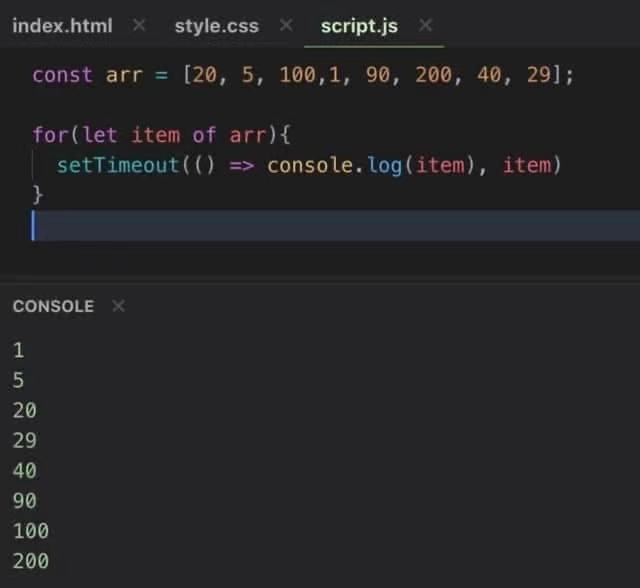

Sleep Sort的思考🤔(SetTimeout的应用)

上图便是知名的 Sleep Sort。
问题的根源是
- SetTimeout starts counting after executed
SetTimeout()被执行时，便开始计时，而一旦计时结束，SetTimeout的内容才会被放入 Task Queue （作为宏任务 marcotask）
所以一旦 arr 长度过长，就出现下面下面情况。